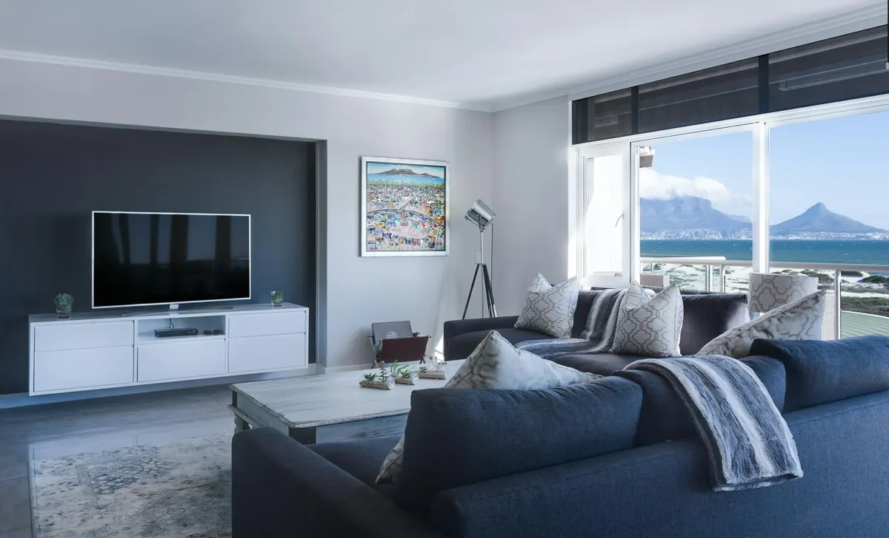
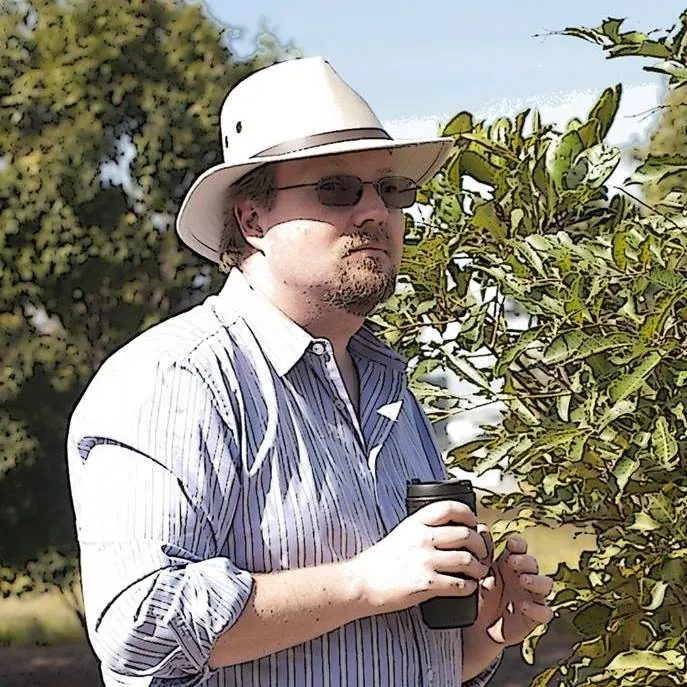
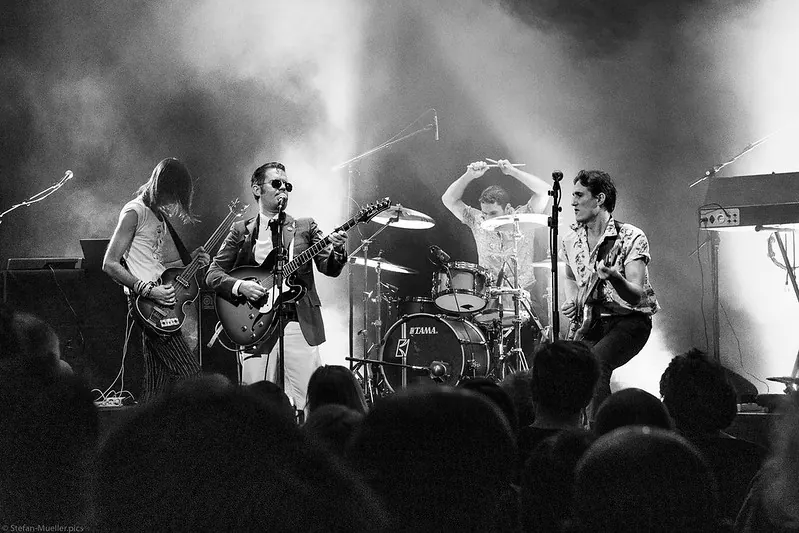
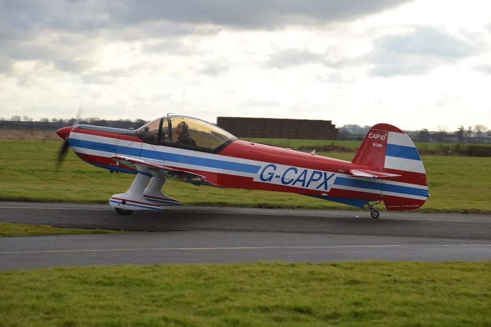

01 / 02 HELLO FROM THE GOLD COAST, AUSTRALIA
Websites with
a human pulse.
I'm Andrew. I design and build for the web, make music, and chase the small details that make creative work feel alive.
Good digital experiences are built with curiosity, craft, and a little soul.
THE THINKING BEHIND THE WORK / 001A COLLECTION OF IDEAS / 01
Selected work.
From warm, welcoming cafés to calm and considered interiors, these are projects where design and purpose meet.
Not just pixels. I care about the person on the other side of the screen.
CONSIDERED BY DESIGN
THE PERSONBEHIND THE PIXELS ↗
A LITTLE INTRODUCTION / 02
Creativity has always been the point.
Hi, I'm Andrew — a creative developer based on Queensland's beautiful Gold Coast.
My world has always existed somewhere between the technical and the expressive. I enjoy building clean, thoughtful websites just as much as I enjoy making music or finding the perfect composition through a camera lens.
Before web development, I taught people to fly. That experience shaped the way I work today: pay attention, stay curious, explain things clearly, and never lose sight of the human being involved.
Get to know the other sides of meHOW I LIKE TO WORK / 03
The thoughtful stuff.
Design with feeling
Natural colour, breathing room, purposeful typography and interfaces that feel welcoming.
Build with care
Responsive layouts, accessible interactions and efficient code that respects the people using it.
Stay curious
Always exploring new ideas, tools and techniques — and finding unexpected connections between them.
OUTSIDE THE EDITOR / 04
More than code.
Some of the best ideas come from stepping away from the keyboard. These passions have shaped how I see the world.

01 / MUSIC
Finding the rhythm.
Playing, composing and exploring the sound of an idea.
02 / PHOTOGRAPHY
Chasing the light.
A different way of noticing detail, composition and beauty.

03 / AVIATION
Looking up.
Lessons from a previous life teaching the art of flying.
WHAT'S NEXT? / 05
Great things start
with a conversation.
Got a project, an idea, or just something interesting to share? I'd love to hear about it.
Find me on GitHub For now, you can reach my public profile here. A direct email contact can be added when ready.